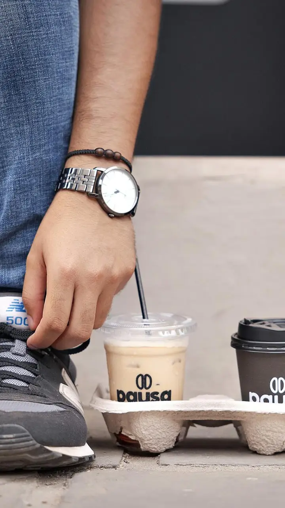
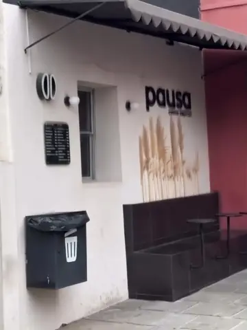
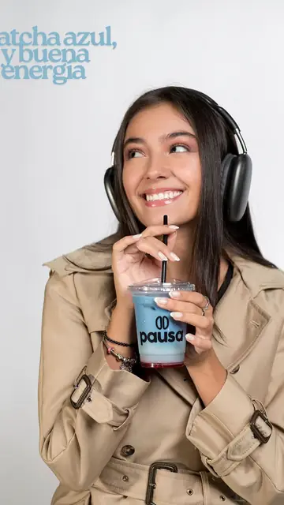

Café para llevar · centro de Tarija ☕
Pide por WhatsApp y retira sin fila 👇

FijadoAsí pides sin fila
FijadoDónde está la ventanilla
¡Hola! Está a Bs [precio] 😊 Puedes pedirlo por WhatsApp desde el enlace del perfil y retirarlo sin fila.
Maqueta de propuesta (EC2, UCB). El enlace del perfil abre el número de demostración con el texto «Hola, vi su TikTok y quiero hacer un pedido para retirar». Cifras del perfil: C31 (09/09/2026). Usuario exacto de TikTok: [VERIFICAR].
Aplicarlo en la cuenta real depende del dueño: PROPUESTO. Estado de la maqueta: SIMULADO.
☕ Matcha Blue & berries: Bs 14. Pide por WhatsApp y retira sin fila → enlace en el perfil.